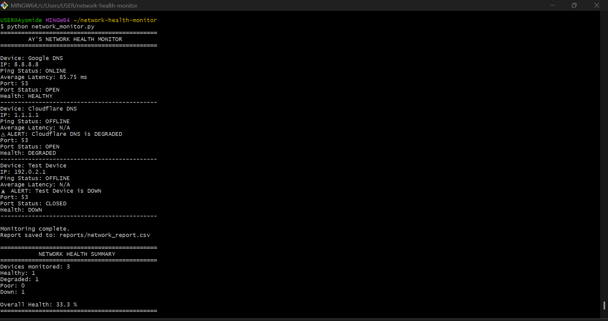
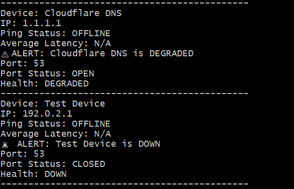
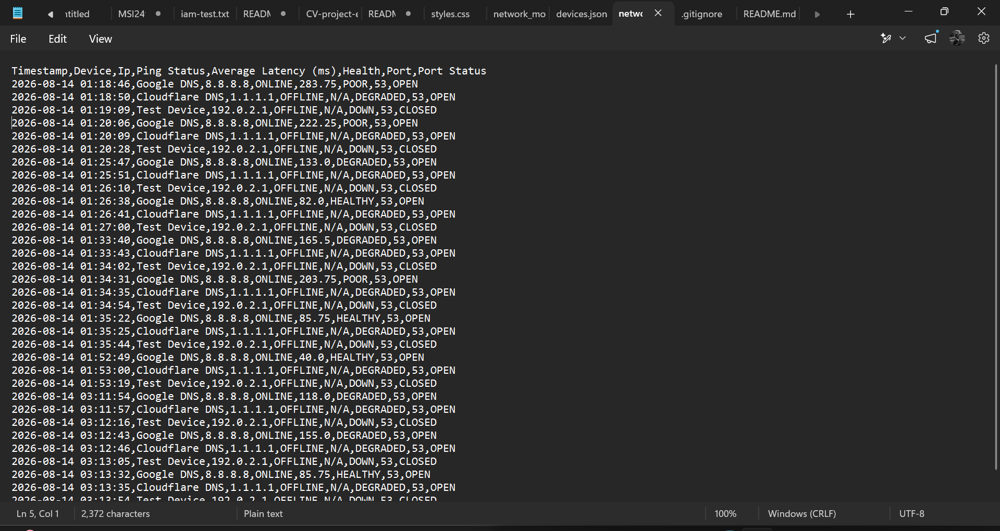

PROJECT 02
Network Health Monitor
A Python-based network monitoring tool that evaluates device availability, network latency, TCP port accessibility and overall network health.
Project Overview
The Network Health Monitor was built as a practical network engineering and automation project using Python's standard library. The tool monitors configured devices, measures network latency, checks TCP port accessibility, classifies device health and records monitoring results for later analysis.
How It Works
ICMP Monitoring
Sends four ICMP ping requests to each configured device and measures response availability and latency.
Latency Analysis
Calculates the average response time and uses defined thresholds to help classify network health.
TCP Port Checks
Tests the configured TCP port to determine whether the monitored service is accessible.
Health Classification
Classifies devices as HEALTHY, DEGRADED, POOR or DOWN based on connectivity, latency and port availability.
Monitoring Workflow
Read device configuration
Send ICMP requests
Check TCP port
Classify network health
Log and alert
Health Classification
HEALTHY
Average latency below 100 ms.
DEGRADED
Ping unavailable with the monitored port open, or latency between 100–199 ms.
POOR
Average latency of 200 ms or higher.
DOWN
Ping unavailable and the monitored TCP port is closed.
Monitoring Result
Network Health Summary
The monitor produces a summary of devices checked and their corresponding health states, while also generating alerts for degraded, poor and unavailable devices.
Monitoring results are stored in a timestamped CSV report, providing a simple historical record of network health observations.
Technical Architecture
01 — Configuration
Devices and monitored TCP ports are defined in a JSON configuration file, making the monitoring targets easy to modify.
02 — Network Checks
The Python monitor performs ICMP connectivity checks and TCP socket tests to evaluate both device reachability and service availability.
03 — Health Engine
Ping results, latency and TCP port status are combined to classify each device as HEALTHY, DEGRADED, POOR or DOWN.
04 — Output
Results are displayed to the operator, alerts are generated when required, and monitoring data is saved to a CSV report.
Monitoring Evidence

Live Monitoring Output
The monitoring tool evaluates configured devices and reports connectivity status, average latency, TCP port accessibility and overall health.

Network Health Alerts
The monitor generates alerts when devices are classified as degraded, poor or down, allowing potential connectivity issues to be identified quickly.

Monitoring Report
Monitoring results are recorded in a timestamped CSV report, providing a persistent record of network health observations.
What I Learned
This project strengthened my understanding of practical network monitoring and troubleshooting using Python.
I gained hands-on experience working with ICMP connectivity, TCP sockets, latency measurement, JSON configuration and CSV-based monitoring logs.
I also learned how monitoring systems can combine multiple signals, such as reachability, latency and port accessibility, to produce a more useful assessment of network health.